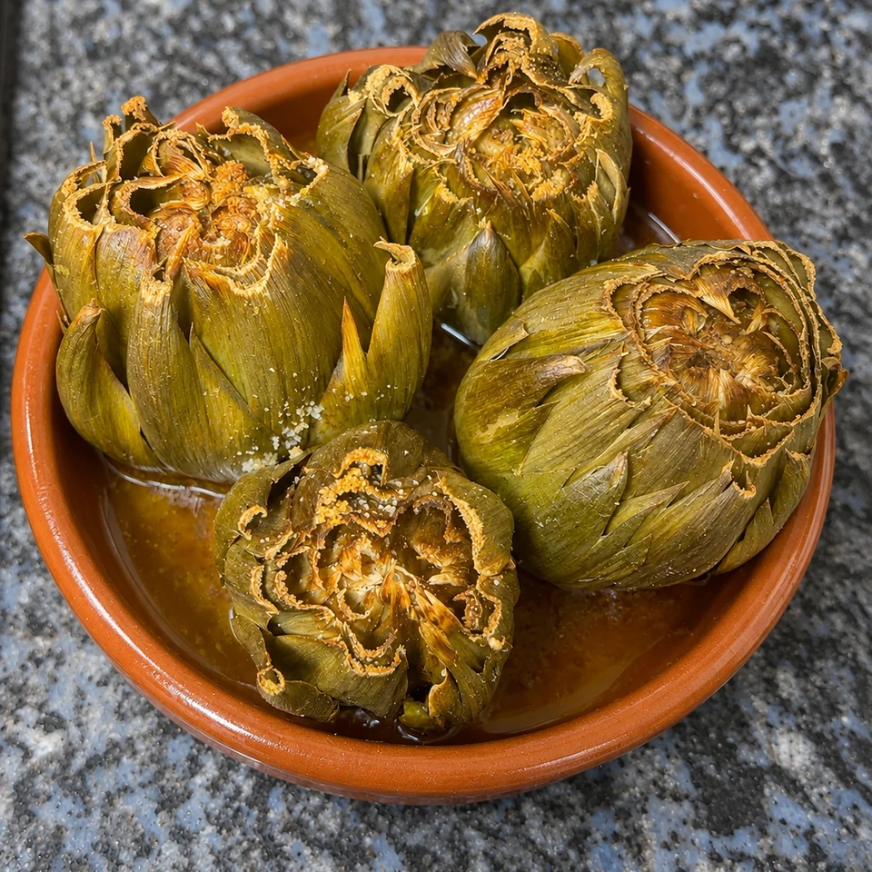

Alcachofas al horno con ajo y aceite de oliva
Alcachofas al horno abiertas como una flor, con ajo y aceite de oliva: tiernas por dentro y ligeramente tostadas por fuera.
- Tiempo total
- 55–65 min aprox.
- Preparación
- 10 min
- Cocción
- 45–55 min
- Raciones
- 4 alcachofas
- Dificultad
- Fácil

Ingredientes
4 alcachofas
Marca lo que ya tienes.
El tiempo de horno es orientativo: depende del tamaño de las alcachofas. Comprueba que la base esté tierna antes de sacarlas.
Preparación
- Precalentar el horno. Calienta el horno a 200 °C con calor arriba y abajo.
- Limpiar las alcachofas. Lava las alcachofas, retira las hojas exteriores demasiado duras y recorta el tallo para apoyarlas. Si las puntas están duras, corta aproximadamente un centímetro.
- Abrir y aliñar. Abre con cuidado las hojas como una flor y coloca las alcachofas de pie en una fuente. Reparte dentro el ajo picado, sal, pimienta y aceite de oliva.
- Hornear tapadas. Añade un poco de agua al fondo de la fuente, cubre con papel de aluminio y hornea alrededor de 30 minutos para que se ablanden.
- Terminar destapadas. Retira el aluminio y hornea unos 15–25 minutos más, hasta que las hojas exteriores estén ligeramente tostadas y la base esté tierna al pincharla.
- Servir. Sirve calientes con los jugos de la fuente y, si quieres, un poco de aceite crudo. Retira las hojas más fibrosas al comer.
UN POCO DE OFICIO
Para que te salgan bien
Consejos
- El tiempo de horno es orientativo: depende del tamaño de las alcachofas. Comprueba que la base esté tierna antes de sacarlas.
Recomendaciones
Para un asado uniforme, elige alcachofas de tamaño parecido y colócalas de pie sin amontonarlas.
Cómo servir y presentar
Sírvelas recién hechas y abre las hojas sobre el plato para que el ajo y el aceite lleguen al corazón.
MÁS SOBRE ESTA RECETA
↑ Volver a la recetaCómo preparar alcachofas al horno tiernas por dentro
Las alcachofas enteras al horno necesitan pocos ingredientes. El ajo y el aceite de oliva aportan sabor, mientras que una primera cocción tapada ayuda a que el corazón se ablande antes del tostado final.
Cómo conseguir que el corazón quede tierno
La parte más gruesa es la base. Por eso conviene añadir un poco de agua a la fuente y cocinar al principio con la bandeja cubierta. Pincha la base antes de darlas por listas.
Cuánto tiempo necesitan en el horno
Como orientación, la receta propone unos 30 minutos tapadas y otros 15–25 destapadas a 200 °C. El tamaño y la frescura de las piezas pueden cambiar ese tiempo.
Cómo servir las alcachofas asadas
El ajo queda repartido entre las hojas y el aceite recoge el sabor de la cocción. Un poco de perejil o unas gotas de limón, si apetece, aportan frescor sin tapar la alcachofa.
Opiniones sobre esta receta
Consultando valoraciones…